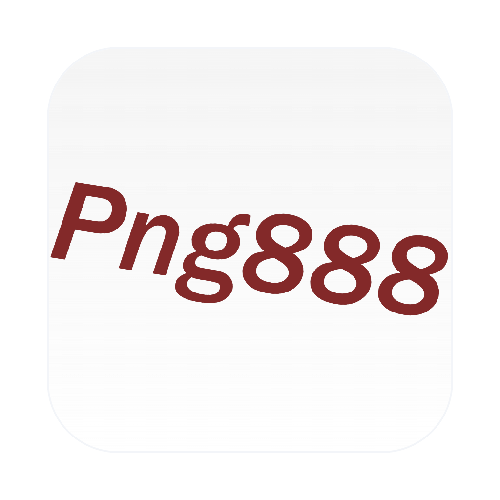
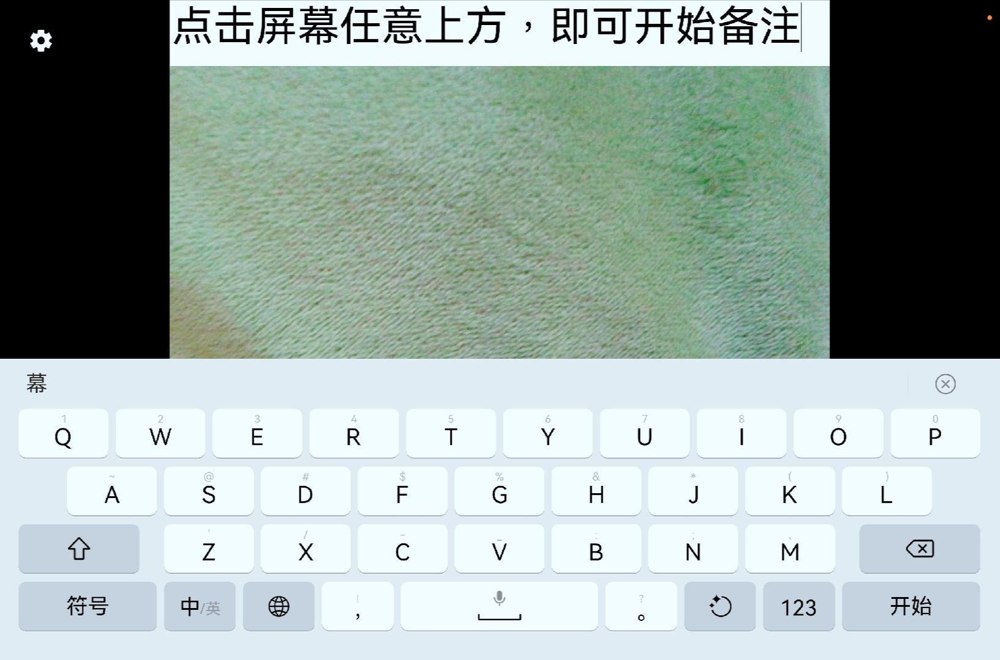
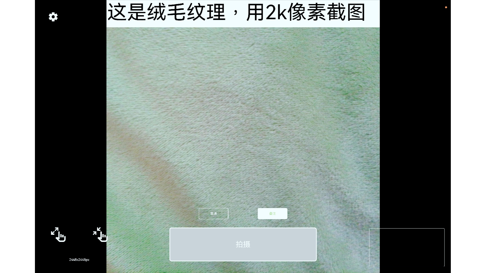
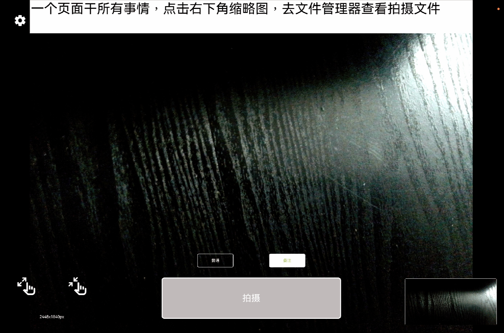
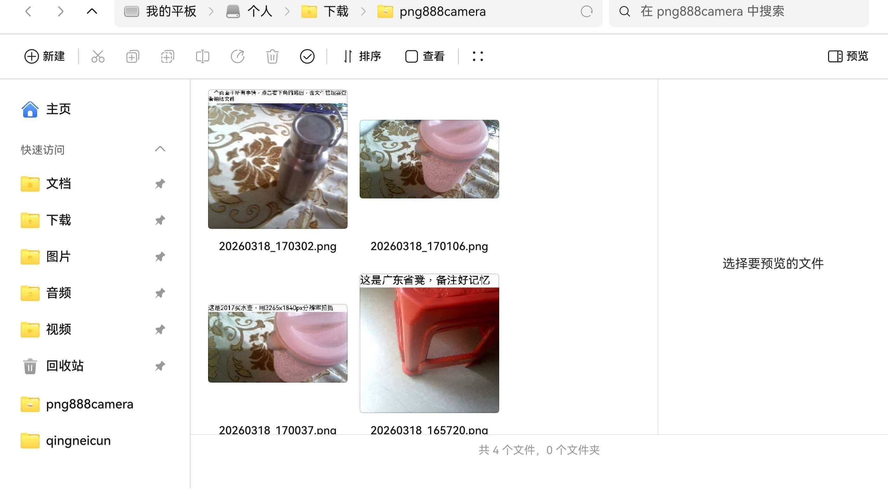

免费备注，免费定位水印，方便记录
备注相机是一款完全免费的拍照备注工具，专为需要拍照留存证据、记录工作现场、旅行打卡留念的用户打造。拍照时自动在照片上添加GPS定位地址、精确时间、天气信息、自定义备注文字等水印，让每张照片都携带完整的场景信息。
相比普通相机App，备注相机最大的特色是智能水印系统。你可以自由选择水印模板、调整水印位置、自定义备注内容。无论是工程巡检拍照留底、物业巡查记录、快递签收证明、出勤打卡、旅行游记，备注相机都能帮你拍出带有完整信息的照片，一图胜千言。
备注相机支持iOS和Android双平台，界面简洁易用，拍照速度快，水印处理实时完成，不占用手机过多存储空间。所有功能永久免费，无内购、无广告干扰。
拍照时自动获取GPS位置，将详细地址（省/市/区/街道）印在照片上。也可手动选择位置，灵活方便。
自动记录拍照的精确时间（精确到秒），时间格式可自定义，支持12/24小时制，日期格式多样可选。
拍照前或拍照后都可以添加文字备注，如工程名称、巡检项目、物品编号、人员姓名等关键信息。
自动获取当前天气状况（晴/雨/雪/阴等）、温度、湿度，为户外工作记录提供完整环境信息。
提供多种水印样式模板，字体颜色、大小、位置可任意调整，满足不同行业和场景的审美需求。
支持最高原始分辨率拍照，水印叠加不压缩画质，照片细节清晰可见，打印放大也不模糊。
省市区的详细地址
年月日时分秒
自定义文字内容
温度湿度天气状况
建筑工地、装修现场、设备巡检时拍照留底，自动记录拍摄地点和时间。监理人员用它拍照作为工程验收凭证，照片含GPS定位和时间戳，具有法律效力和审计价值。
保洁、安保、维修人员日常巡查时拍照打卡，证明在规定时间到达规定地点完成了工作。物业公司用它考核员工出勤和工作质量。
快递员派件时拍照证明包裹已送达，照片包含精准时间和地址，防止纠纷。外卖骑手也可用它记录取餐送餐情况。
旅行途中拍照自动记录地点和时间，无需事后回忆"这张照片在哪拍的"。游记整理时一目了然，分享到社交媒体也显得专业有格调。
销售拜访客户时拍照打卡，证明拜访时间和地点。管理者可通过照片水印核实外勤人员的工作轨迹。
租房交房时拍照记录房屋状况，照片自带时间地址，避免退房时产生纠纷。房东和租客都能用它保护自身权益。




是的，所有功能全部免费，包括GPS定位水印、时间水印、自定义备注、天气信息等。无任何内购项目，无强制广告。
备注相机使用设备自带的GPS芯片定位，室外精度可达5-10米，室内会使用WiFi辅助定位。定位地址通过反向地理编码获取详细地址信息。
可以拍照和添加时间水印、自定义备注水印。GPS定位和天气信息需要网络支持，建议在有网络的环境下使用以获得完整水印效果。
备注相机生成的水印直接嵌入照片中，保存后不可去除。如需无水印原图，建议在拍照前关闭水印功能，或使用手机自带相机另行拍摄。
备注相机支持调整照片分辨率和压缩质量，你可以根据需求选择高清模式或省空间模式，灵活控制存储占用。